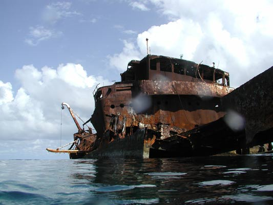

SCP-455

- Item nº:
- SCP-455
- Classe do objeto:
- Euclid
Procedimentos Especiais de Contenção:
O objeto SCP-455 não pode ser movido nem contido em nenhuma estrutura. A contenção deve ser feita no local. Nenhuma exploração ou teste deve ser feito sobre o SCP-455 ou dentro dele. Nenhum funcionário deve permanecer nas proximidades por mais de cinco minutos. Todo contato físico com o SCP-455 é proibido; qualquer funcionário que desobedecer a essa ordem deve ser colocado em quarentena.
Quaisquer alucinações vividas perto do SCP-455 devem ser registradas e catalogadas. Qualquer funcionário que tenha alucinações deve ser transferido. Qualquer funcionário que tente entrar no SCP-455 deve ser contido por todos os meios considerados necessários.
Descrição:
O SCP-455 é um grande navio de carga atualmente encalhado na costa sul do Chile. A maior parte de sua estrutura está submersa e muito danificada, com ferrugem cobrindo de 85 a 90 por cento de todas as superfícies. A estrutura interna parece ser significativamente maior que as dimensões externas e não está alagada, apesar dos grandes buracos visíveis no casco externo.
A estrutura interna parece ser uma montagem aleatória de cômodos, corredores e estruturas. As equipes iniciais de salvamento relataram cômodos feitos de dentes humanos, um motor com tiras de tendão no lugar de correias dentadas, um corredor que se estende por 182,88 m (600 pés) além de onde o casco externo deveria terminar, uma "academia" aberta com paredes de aço tão maleáveis quanto puxa-puxa e inúmeras alucinações auditivas e visuais. A equipe foi perdida depois de relatar a entrada na "navegação central". A equipe de resgate foi perdida depois de relatar a investigação de "gritos" em uma seção de carga.
O Dr. ███████████████ sugeriu o uso de robôs para mapear o interior do SCP-455 após o fracasso de várias equipes de exploração tripuladas.
Registro de Experimento 455 detalha as tentativas de explorar o SCP-455 e as informações obtidas apesar do fracasso geral delas.
Registro de Exploração 455-3: registro da última grande tentativa de exploração pela FTM Zeta-9.